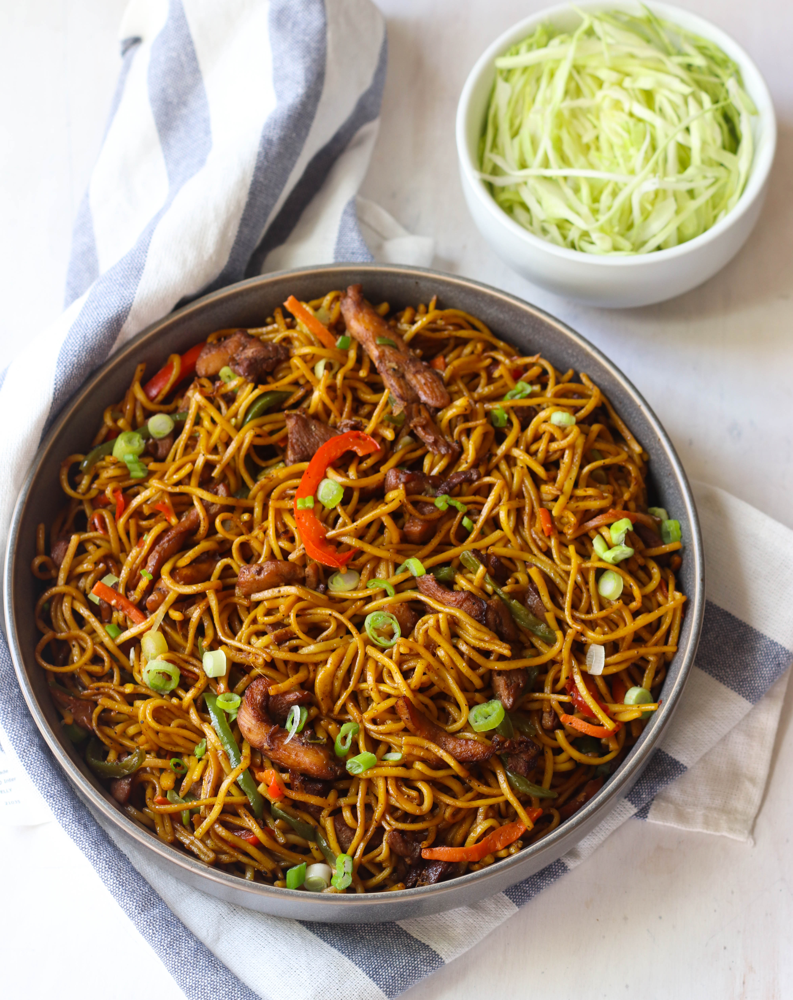

Chowmin

Description
Chow mein is a stir-fry noodle dish that is made in many
different variations, but typically made with noodles, cabbage, celery,
green onions, and garlic. Traditional chow mein is made with fried noodles
but often it is prepared with boiled lo mein, chow mein, or yaki-soba
noodles.
Ingredients
- Egg Noddles
- Soy Sauce
- Sesame Oil
- Vegetable Oil
- Ginger (Minced)
- Garlic (Minced)
- Cabbage
- Carrot
- Green Onion (Sliced)
- Mushroom
- Salt
- Masala (Spices)
Steps
-
Cook the noodles according to the package instructions, usually boiling
for a few minutes until just tender.
- Drain and rinse with cold water to stop the cooking process.
- Toss with a little oil to prevent sticking, and set aside.
-
In a small bowl, mix together soy sauce, oyster sauce, sesame oil,
sugar, and the cornstarch slurry.
-
Heat 1 tablespoon of oil in a wok or large skillet over high heat.
-
Add the protein and stir-fry until cooked through. This usually takes
about 3-5 minutes depending on the protein.
- Add the remaining 1 tablespoon of oil to the wok.
-
Add the minced garlic and ginger, and stir-fry for about 30 seconds
until fragrant.
-
Add the cabbage, carrots, and bell peppers. Stir-fry for 2-3 minutes
until the vegetables are tender-crisp.
- Add the cooked noodles and protein back into the wok.
- Pour the sauce over the mixture.
-
Toss everything together to coat the noodles and other ingredients with
the sauce.
-
Stir-fry for another 2-3 minutes until everything is heated through and
well combined.
-
Garnish with toasted sesame seeds and chopped cilantro, if desired.